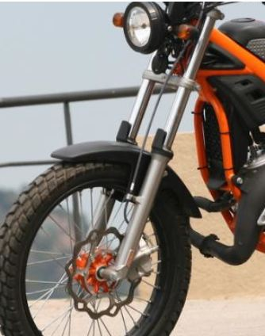

SUSPENTSIOA
Aurrekoa: Urkila teleskopikoa du, eta honen barrak 36 mm-ko lodiera dute. Honek asko errazten du motorra gidatzeko orduan, eta oso erosoa egiten du.

Atzekoa: PRS sistema erabiltzen duen beso bikoitzeko amortiguadorea erabiltzen du. Honek, amortiguadorearen gogortasuna doitzea ahalbidetzen digu.
| Aurreko suspentsioa | Atzeko suspentsioa | |||
| Suspentsio mota | Urkila teleskopikoa | --- | --- | --- |
| Barren diametroa | 36mm | --- | --- | --- |
| Baskulante mota | --- | --- | "Beso" bikoitzekoa | --- |
| Mota | --- | --- | --- | Monoamortiguadorea, PRS sistemarekin |